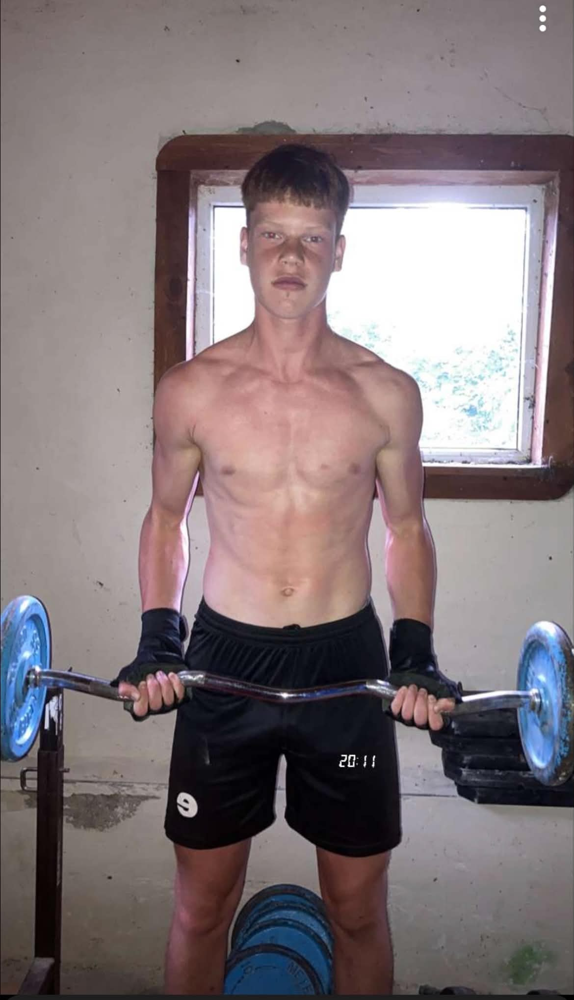
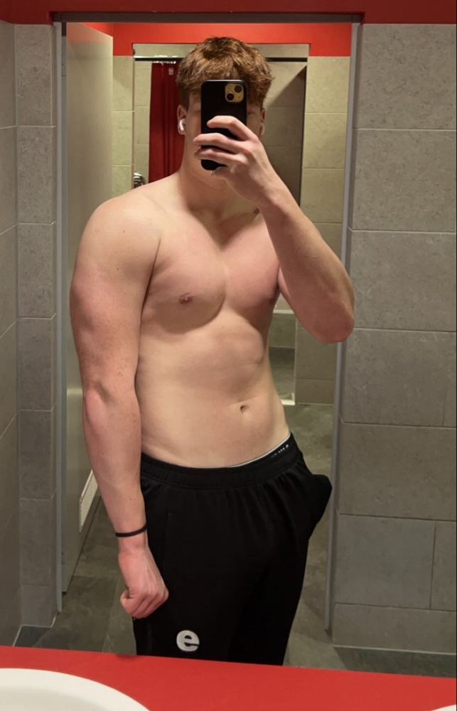
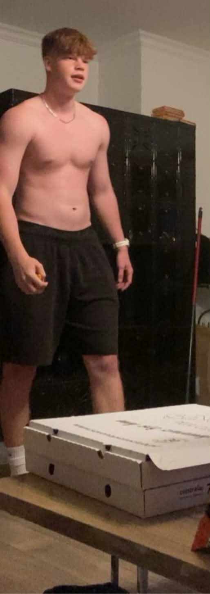
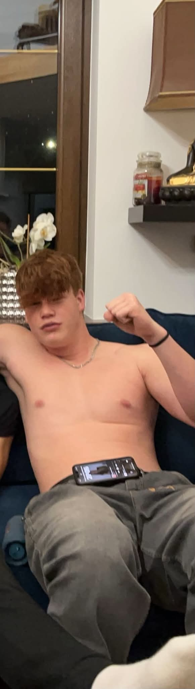
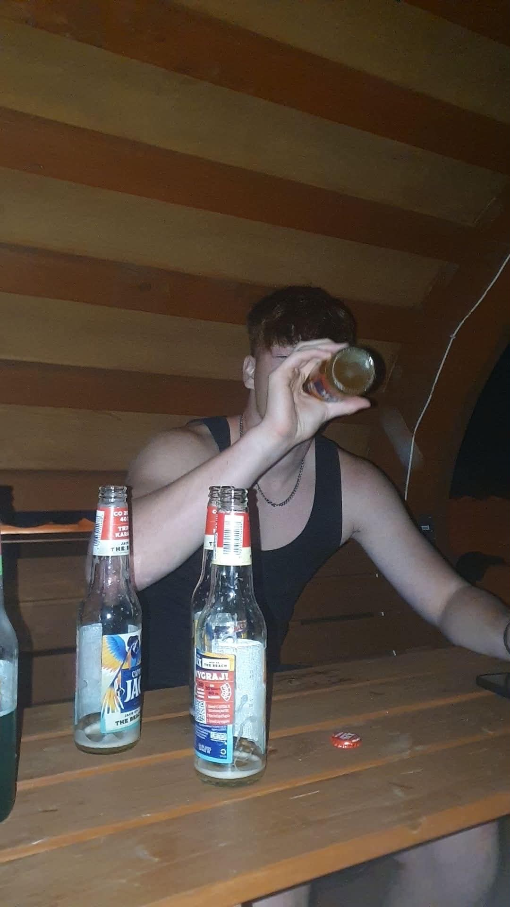
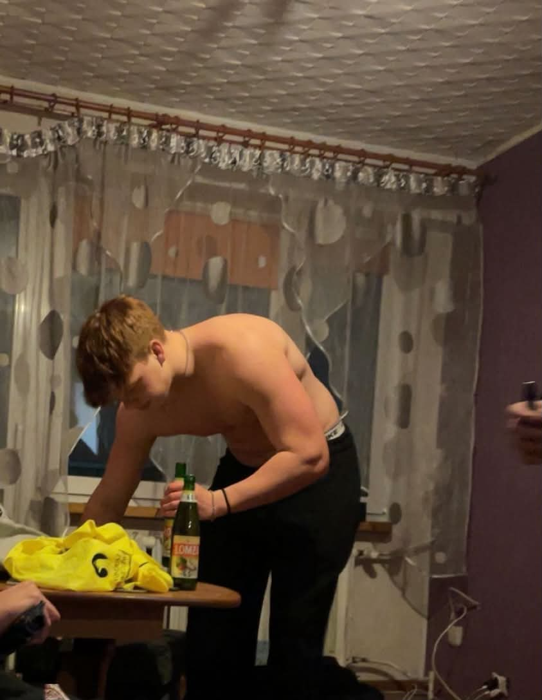
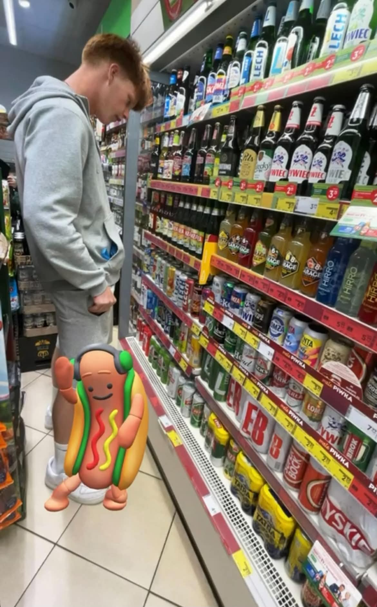
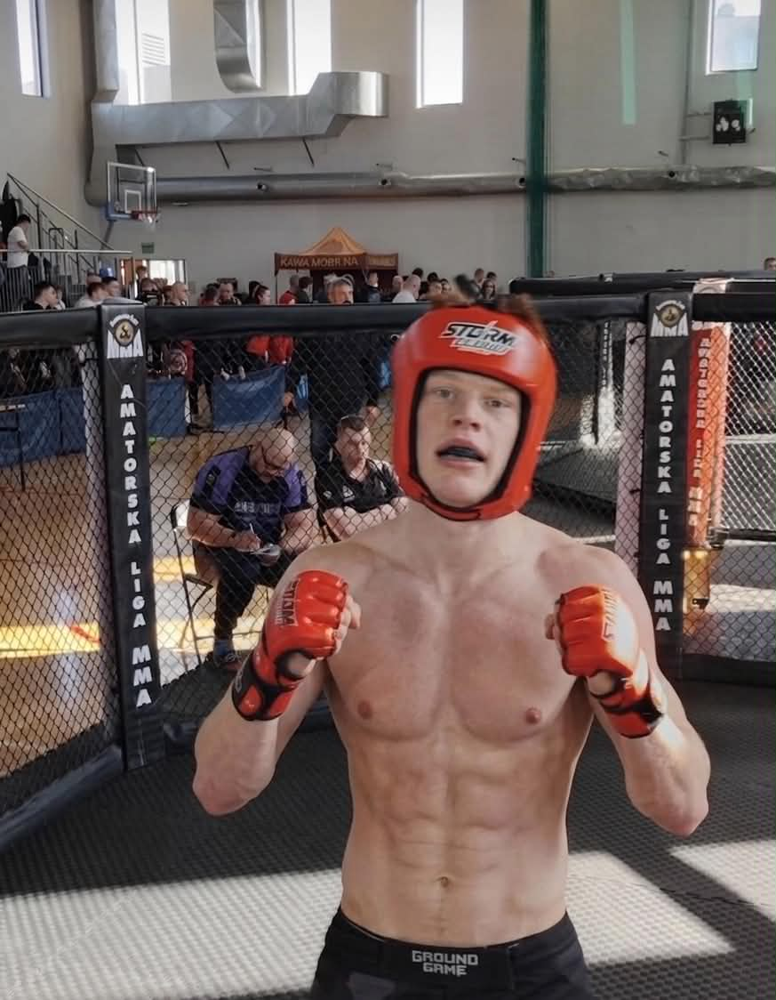
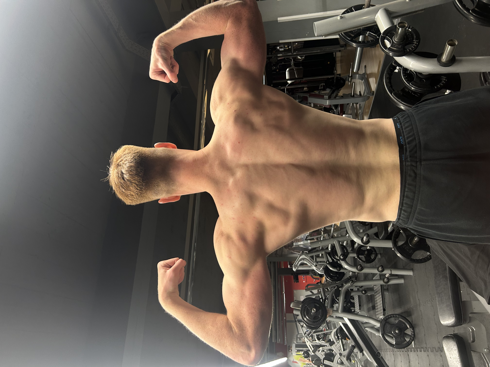
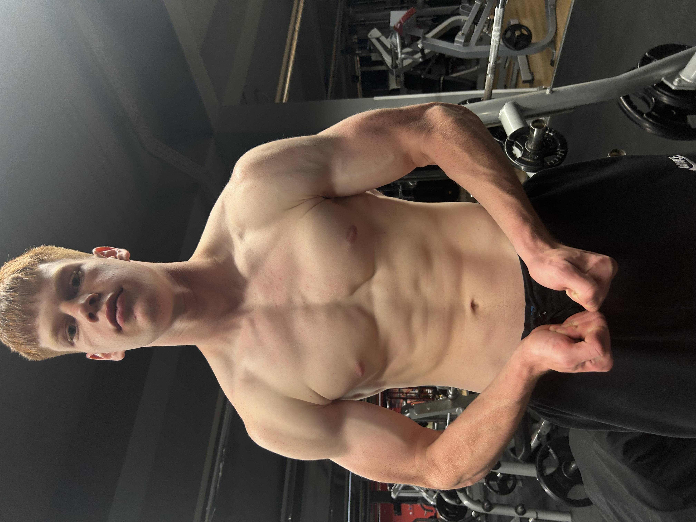

Jak odbiłem się
od samego dna.
Prolog — Zanim to wszystko
Przez 8 lat
byłem sportowcem.
Jest 23:47. Siedzisz przy telefonie i przewijasz. Może to Instagram, może YouTube — nie ma znaczenia. Wiesz, że powinieneś już spać. Wiesz, że jutro zaczniesz ten sam dzień co wczoraj. I gdzieś głęboko czujesz — że to nie jest życie, które miałeś prowadzić.
Znam to uczucie. Przez kilka lat byłem tym facetem.
Mam na imię Michał. I zanim opowiem ci jak wyszedłem z tego miejsca — chcę ci powiedzieć skąd spadłem.
Przez 8 lat grałem w piłkę nożną. Treningi 4 razy w tygodniu, mecze w weekendy, zimne poranki na boisku gdy inni jeszcze spali. Byłem chudy, sprawny, miałem cel i drużynę, która na mnie czekała. Miałem strukturę. Miałem odpowiedzialność. Miałem tożsamość.
Nikt nie mówił mi wtedy, żebym ćwiczył — po prostu to robiłem. Bo tak wyglądało moje życie.

Czasy piłki. Chudy, aktywny, z celem.
A potem piłka się skończyła. Kontuzja, zmiana planów, inne priorytety — tak to zawsze wygląda. I nagle znikła struktura, która trzymała mnie w ryzach. Bez treningów. Bez drużyny. Bez terminarza meczów.
W ciągu kilku lat przytyłem 30 kilogramów. Nie jednym skokiem — powoli, kilogram po kilogramie. Tak powoli, że prawie tego nie zauważyłem. Aż pewnego dnia spojrzałem w lustro i nie poznałem tej osoby.
Nie stałem się gruby przez lenistwo. Straciłem system, który sprawiał, że byłem aktywny — i nie miałem nic w zamian.

Styczeń 2024. 105 kg, 10 godzin TikToka dziennie.
Rozdział 1 — DnoŻyłem
nie swoim życiem.
105 kilogramów. Telefon w ręku przez 10 godzin dziennie — z czego TikTok zajmował ponad 7. Alkohol w weekendy, papierosy „żeby się odstresować", imprezy, bo co innego? Rodzina wstydziła się za mnie — a ich wstyd bolał najbardziej. Sam też się siebie wstydziłem.
Każdego ranka budziłem się z tym samym uczuciem: że zmarnowałem poprzedni dzień i zmarnuję też dzisiejszy. Scrollowałem, zanim wstałem z łóżka. Oglądałem jak inni trenują, zamiast samemu trenować. Widziałem jak inni budują życie — i zamiast się zainspirować, czułem się jeszcze gorzej.
Wiedziałem, że marnuję życie. Ale „wiedzieć" i „zmienić" to dwie kompletnie różne rzeczy — dopóki nie zrozumiesz dlaczego.
Problem nie był w tym, że byłem leniwy. Problem był w tym, że przez lata wbudowałem w siebie system, który działał przeciwko mnie. TikTok i Instagram zaprojektowane są tak, żebyś nigdy nie skończył. Alkohol daje chwilowy spokój — i bierze dwa razy tyle energii następnego dnia. Imprezy dają poczucie bycia w grupie — i zostawiają pustkę w poniedziałek rano.
Nie byłem słaby. Wpadłem w pułapkę systemu, który udawał, że mi służy.





2018–2024. Tak wyglądało moje dno.
Każdy rok bez zmiany kosztuje cię:
- → Kolejne kilogramy, które z każdym rokiem będzie coraz trudniej zrzucić.
- → Stracone lata, w których nie jesteś facetem, jakim zawsze chciałeś być.
- → Zdrowie, którego po 35. roku życia nie odbudujesz już tak łatwo.
- → szacunek do siebie — który ucieka z każdym odpuszczonym dniem
- → relacje z ludźmi, którzy widzą że nie dajesz z siebie wszystkiego
Rozpoznajesz się w tym?
Byłem dokładnie tam gdzie ty jesteś teraz.
I wyszedłem. System który mi pomógł —
masz teraz przed sobą.
349 zł · Gwarancja zwrotu 30 dni · Dostęp w 60 sekund
Rozdział 2 — Punkt zwrotny
Jedna
decyzja.
Nie pamiętam dokładnej daty. Pamiętam moment. Siedziałem późno w nocy, fastfood obok, scrollowałem filmiki motywacyjne — i nagle dotarło do mnie jak absurdalne jest to, co robię. Oglądałem, jak inni działają, zamiast samemu działać.
Nie powiedziałem sobie „od poniedziałku". Nie czekałem na „dobry moment". Zamknąłem telefon. Wstałem. I następnego ranka — po raz pierwszy od miesięcy — poszedłem biegać.
To nie był moment objawienia. Nie czułem się jak bohater. Czułem się jak ktoś, kto ledwo wytrzymał 15 minut truchtu i musiał się zatrzymać. Ale zrobiłem to.
I następnego dnia znowu.
I następnego.
Rozdział 3 — System
Nie siła woli.
System.
Przez pierwsze tygodnie dużo się przewracałem. Opuściłem treningi. Wróciłem do telefonu. Zjadłem fastfood w środku „diety". To normalne — i to właśnie wtedy większość ludzi odpuszcza i mówi sobie „nie nadaję się".
Ja zrozumiałem coś innego: problem nie jest w motywacji. Problem jest w braku systemu.
Zacząłem badać co sprawia, że zmiany są trwałe. Czytałem, eksperymentowałem na sobie, notowałem co działa, a co nie. Odkryłem, że kluczem nie jest siła woli — bo siła woli się wyczerpuje. Kluczem jest zaprojektowanie środowiska tak, żeby dobre wybory były łatwiejsze niż złe.
Zamiast ograniczać TikToka siłą woli — usunąłem apkę. Zamiast „starać się nie pić" — przestałem chodzić w miejsca, gdzie wszyscy piją. Zamiast „motywować się do treningów" — kupiłem karnet i umówiłem się z ziomem na konkretne godziny.
Środowisko jest silniejsze niż charakter. Zmień środowisko — zmienisz siebie.
W ciągu 5 miesięcy straciłem 20 kilogramów. Nie dlatego, że odkryłem magiczną dietę. Dlatego, że zbudowałem system, który działał za mnie, a nie przeciwko mnie.
Rozdział 4 — MMA i prawdziwy test
Wróg
w klatce.
Trening siłowy zmienił ciało. Ale MMA zmieniło głowę.
Pierwszy raz stanąłem do sparingu i dostałem po twarzy. Serio — dosłownie. I wiecie co? Poczułem się żywy. Po raz pierwszy od lat naprawdę byłem w tej chwili, nie scrollowałem w tle.
MMA nauczyło mnie, że strach jest informacją, nie rozkazem. Że ból mija, a rezygnacja zostaje. Że najgorszy scenariusz rzadko jest tak straszny jak go sobie wyobrażamy.
Trzy walki. Trzy zwycięstwa. Każda z nich nauczyła mnie czegoś, czego żaden kurs online by nie nauczył.


2024–2026. −20 kg. Silniejszy niż kiedykolwiek.
Te same wyniki są możliwe dla ciebie
To nie był talent.
To był system.
Ten sam system który zabrał mi 20 kg,
wycisnął 130 kg i wprowadził do klatki —
jest teraz dostępny dla ciebie.
01 września 2026 — 90 dni od teraz
Wyobraź to sobie.
Wstajesz rano — bez alarmu. Ciało cię budzi, bo je szanujesz. Patrzysz w lustro i widzisz kogoś, kogo szanujesz. Rodzina to widzi. Znajomi pytają co się stało. Ty wiesz — i to jest tylko twoje.
Za 90 dni możesz być w tym miejscu. Albo za 90 dni możesz być dokładnie tam gdzie jesteś teraz — tyle że 90 dni starszy.
Rozdział 5 — Dlaczego Plan Wojownika
Stworzyłem
to dla ciebie.
Kiedy przeszedłem przez swoją transformację, zaczęli pytać mnie znajomi: jak to zrobiłeś? Czy możesz mi pomóc?
Zacząłem pomagać. Jeden na jednego. I zobaczyłem, że te same błędy powtarzają się u każdego. Te same wrogowie: telefon, brak rutyny, brak odpowiedzialności przed nikim, brak jasnego celu.
Plan Wojownika to nie jest kolejny kurs fitness. To system 90 dni, który zaatakuje te same przyczyny, które trzymały mnie w miejscu przez lata. Dieta, trening, ale przede wszystkim — przeprogramowanie środowiska i głowy.
Nie jestem guru. Nie jestem influencerem. Jestem facetem, który rok temu był tam, gdzie ty jesteś teraz — i wyszedł. Dlatego wiem, że to działa.

Michał dziś. 85 kg, 3:0 MMA, Plan Wojownika.
8 lat piłki nożnej
Chudy, aktywny, z drużyną i celem. Struktura, która działała — dopóki trwała.
+30 kg bez planu
Koniec piłki, brak zastępnika. Kilogram po kilogramie, rok po roku.
Punkt zero
105 kg, 10h TikToka dziennie, alkohol, imprezy. Rodzina się wstydzi.
Pierwsza decyzja
Usuwam TikToka. Biegam po raz pierwszy. 15 minut — ale je kończę.
−20 kg i system działa
85 kg. Siłownia 5x w tygodniu. Pierwsze sparingi MMA.
Pierwsza wygrana walka
Trzy walki MMA — trzy zwycięstwa. Rodzina jest ze mnie dumna.
Plan Wojownika
Buduję program oparty na tym, co na mnie zadziałało — żeby działał też na ciebie.
Decyzja i kontrakt
Podpisujesz kontrakt ze sobą. Pierwszy raz od lat masz plan — nie życzenie.
Detoks i reset
Usuwasz rozpraszacze. Telefon idzie do drugiego pokoju. Pierwsze budzenie bez scrolla.
Pierwsze zmiany
Mniej zmęczenia, więcej energii. Siła ciała rośnie. Otoczenie zaczyna pytać co się dzieje.
System działa
Trening to nawyk, nie obowiązek. Skupienie wraca na poziom, którego nie pamiętałeś.
Nowa tożsamość
Silniejszy. Spokojniejszy. Inny. To już nie jest program — to jesteś ty.
⚠ Twój mózg właśnie się broni
Właśnie pojawiła ci się myśl: „nie dla mnie", „nie teraz", „może za miesiąc". To nie jest twój głos — to mechanizm przetrwania, który przez tysiąclecia chronił nas przed nieznanym. Dziś sabotuje twój rozwój.
Pytanie nie brzmi: „czy jesteś gotowy?". Pytanie brzmi: „ile jeszcze chcesz czekać?"
Twoja kolej.
Zacznij.
Masz przed sobą wybór: zamknąć tę stronę i wrócić do scrollowania — albo zacząć pisać swoją własną historię. 90 dni. Jeden krok naraz.
Zanim podejmiesz decyzję — jeden krok.